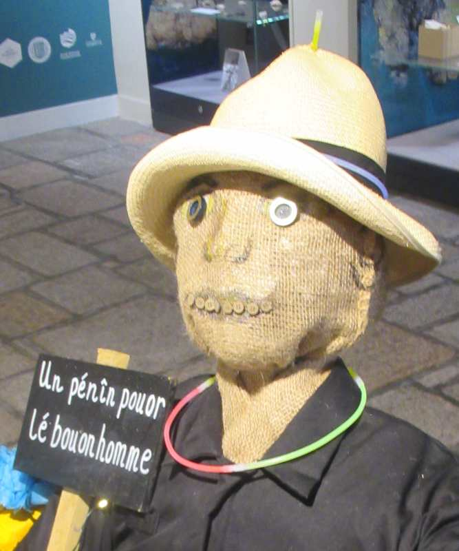

 Aut'fais en Jèrri nou célébrait la Séthée d'Guy Fawkes auve un grand carnaval - des habits, des vîsagiéthes, eune grande procêssion auve eune mûsique - et pis nou brûlait l'bouonhoumme sus l'haut d'la fouée et lanchait des feux d'artifice.
I' créthaient probabliément qué l'monde sont habilyis pour la séthée d'Guy Fawkes quand i' m'ttaient des drôles d'habits et des vîsagiéthes.
George d'La Forge
JEP 2/1/1981
"Si tu'es méchant, lé Balle-à-leunettes veindra té qu'si!" Lé bouan dictionnaithe Jèrriais nouos dit qué l'appathence dé la chandelle dans un navet ou m'lon, creûsé pour èrprésenter l'vîsage d'un démon à la célébrâtion dé La Toussaint, et p't êt' dé "Guy Fawkes", donnit l'idée du nom viyant qué v'la tchi r'sembliait à eune balle alleunmée.
George d'La Forge
JEP 15/10/1969
...nou met la vîsagiéthe sus la fache comme tu l'vis bein la séthée du carnaval pour "Guy Fawkes" y'a tchiques sémaines.
George d'La Forge
JEP 30/1/1975
J'cliergîment les tablyes, et l'meublye dé d'dans l'parleux et j'nouos mîment à danser. Ph'lippe avait învité ieun d'ses amins qui joue l'Flutina et y'avait deux ou trais des gâs d'la "Band" dé Guy Fawkes avec lus flûtes, et Nic'less Plaieouel vînt avec san violon.
George d'La Forge
Chroniques de Jersey 4/1/1947
Quand v'nait l'mais d'novembre y'avait la mûsique dé "Guy Fawkes" ("Fax" pour nous), tchi pratitchait touos les sièrs pour eune sémaine dévant l'arrivée du sé qu'nou-s-alleunmait la fouée pour brûler l'bouanhomme. La mûsique 'tait compôsée du gros tambour et des fliûtes. I' y'avait pus d'son qué d'harmonie! Lé Sieur George Steuber 'tait l'Chef dé Mûsique.
George d'La Forge
JEP 26/6/1982
... I pathaît qu'Pièrre Lafétchet s'est crévé l'ventre en jouant l'gros tambour quand il 'taient à pratitchi 'Malbroc s'en va-t-en dgèrre, Mironton, Mironton, Mirontaine' pour la séthée d' 'Guy Fawkes'...
George d'la Forge
JEP 10/4/1979
Ch'tait là qué la mûsique dé "Guy Fawkes" s'assembliait pour pratitchi quand v'nait l'temps d'célébrer la fête et brûler la fouée, et ch'tait un temps d'excitement pour les mousses. Ch'tait l'Sieur Steuber tch'était l'maître d'mûsique. Quand nou ouiyait l'gros tambour au c'menchement des pratiques au sé, touos les mousses êprouvaient à faithe lus pathents les laîssi aller ouï la mûsique sus L'Pallion. Souvent les pathents finnissaient par y'aller ieux-mêmes. Quand y'avait un carnaval la séthée même dé "Guy Fawkes" tch'avait la mûsique en tête, ch'tait au Pallion qu'la procêssion c'menchait et finnissait.
George d'la Forge
JEP 10/1/1979
...Mais l'chins d'Novembre comme j'e'm'prom'nais,
Jé m'arrêti un "Guy" à vais,
Car sûs sa tête j'vi qu'il 'avaient
Men vièrrh Topper.
Sûs un mouoché dé rabotins,
Lé sé lé "Guy" en chendres fut mins,
Et ché fut là la fin des fins
D'men vièrrh chapé; d'men Bell-Topper.
Londres, 1880
"C'h'la S'peut"
Viyiz étout: